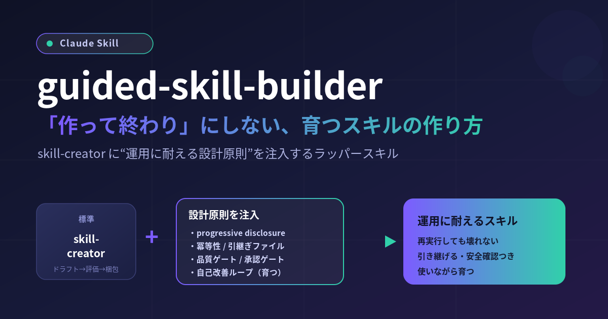

Claude の skill-creator を使えばスキルはすぐ作れます。ですが、実運用に載せると「再実行で二重登録」「環境が変わると動かない」「履歴が膨れて遅い」といった問題に必ずぶつかります。guided-skill-builder は、標準の作成プロセスに運用に耐えるための設計原則を強制注入するラッパースキルです。この記事では、その設計思想と構造を技術者向けに解説します。
skill-creator は「ドラフト → テスト → 評価 → 改善 → パッケージ」という優れた標準プロセスを持ちます。しかしこのプロセスは「どう作るか」の手続きであって、「運用に耐える設計になっているか」までは強制しません。結果として、動くけれど脆いスキルが量産されがちです。
guided-skill-builder のアプローチは明快です。プロセスは再発明せず、各ステップに設計ガイドライン（references/design-principles.md）を注入するだけ。役割分担を一文で言えばこうです。
「何をするか」は skill-creator に従い、「どう設計するか」をガイドラインで縛る。
中核は A〜F の6グループからなる原則集で、各項目に「なぜそうするのか」が添えられています。丸暗記のルールではなく、賢いモデルに理由ごと委ねるスタイルです。技術的に効く要点を抜粋します。
判断の外部化（対応表・定義をファイル固定）、反復処理のコード化（確定処理は scripts/ へ）、progressive disclosure（メタデータ → SKILL.md 本体 → 参照ファイルの3階層で本体を薄く保つ）。さらに引継ぎファイルで状態を跨ぎ、業務分割で途中再開可能にし、サブエージェントに重い読解・収集をオフロードして結論だけ受け取ります。都度LLMに推論させるほど遅く・不安定・高コストになる、という一貫した理由づけです。
MCP 等で外部を create/update/delete する処理は「提示 → 承認 → 実行」を必須にし、既定は下書き止まり。書き込み・削除は非対称にコストが大きいからです。定期実行が必要でローカル MCP 不要なものはリモート（スケジュール）実行を推奨。結果は見やすい HTML に可視化します。
composability（他スキルと衝突しない）、portability（Claude.ai / Code / API / Cowork の差を吸収）、そしてdescription の質＝トリガー精度。起動判断は description だけで行われるため、「何をするか」＋「いつ使うか（具体的発話）」の両方を、少し pushy に書きます。
冪等性（同じ入力で二重登録しない）、前提条件チェック（fail-early）、変更履歴、そして共有時の固有名詞の汎化／匿名化。破壊的操作の安全性と再実行性を実効化する土台です。
工程の節目に通過条件を置きます。品質ゲートは別エージェントによる独立レビューや検証コードで機械的に合否判定（作成者と検査者を分けて見落としを減らす）。承認ゲートは不可逆操作・成果物確定の前に人の承認・目視確認を挟みます。ビルダー自身にも、生成するスキルにも両方を組み込みます。
状態を跨ぐ／長時間動く／育てる前提のスキル向けの原則群です。session は隔離され何も残らない前提のうえで、記憶層（引継ぎ／メモリストア）を明示設計し、compaction・structured note-taking・サブエージェント・just-in-time で長時間の文脈肥大（context rot）を抑えます。過去ログを定期的に再整理（dreaming 型 consolidate）して先回りし、自己改善は「感想」ではなく eval で計測されたループで回します。
guided-skill-builder 自体のファイル構成は、progressive disclosure を体現して本体が薄く、詳細は参照ファイルに逃がしてあります。
guided-skill-builder/
├── SKILL.md # 薄い本体（流れ＋原則の要約＋ゲート配置）
├── CHANGELOG.md # いつ・何を・なぜ
└── references/
├── design-principles.md # 本体的な指示（原則 A〜F、各項目に「なぜ」）
├── delivery-checklist.md # 納品前品質ゲートのチェックリスト
└── templates/
├── mapping-template.md # 判断の外部化（対応表）
├── handoff-state-template.json # 引継ぎ状態（weight/last_used/decay）
├── quality-gate-template.md # 生成スキルに埋めるゲート雛形
└── changelog-template.md # 変更履歴の雛形SKILL.md には要約だけを置き、「ドラフト前に必ず design-principles.md を読む」と誘導します。こうすることで、トリガー時に載るコンテキストを軽く保ちつつ、必要な時に深い指示へ降りられます。
実務上のフローはこうなります。ゲートを工程の節目に差し込むのがポイントです。
Step 0 前提確認（skill-creator の場所特定 / design-principles 読込 / 環境・MCP確認）
│
▼ ドラフト（各設計判断で原則を参照）
│
├─[品質ゲート] 別エージェントが独立レビュー＋検証コード（不合格なら差し戻し）
│
▼ テスト・評価（skill-creator の eval ループ＝品質ゲートの一部）
│
├─[承認ゲート] テストプロンプト確定 / 外部書込前 / パッケージ前に人が承認
│
▼ 納品前チェック（delivery-checklist.md ＝納品前品質ゲート）
│
▼ .skill パッケージ → present_files で提示（目視確認）
│
▼ 利用後：自己改善ループ（差分を振り返り、更新を提案）本体を薄くする勇気。 原則を全部 SKILL.md に書くとトリガー時のコンテキストが重くなります。要約だけ置いて参照へ誘導する設計が効きます。
自己レビューはバイアスに弱い。 だからこそ品質ゲートは「作成者と検査者を分ける」ことに価値があります。別エージェントに design-principles.md と delivery-checklist.md を観点として渡し、合否と指摘だけを受け取ると、生データを持ち込まずコンテキストも軽く保てます。
過剰なゲートは運用を重くする。 ゲートは「価値に見合う節目だけ」に置くのがコツです。重要な出力・登録の前に品質ゲート、不可逆操作・成果物確定の前に承認ゲート、というメリハリをつけます。
自己改善は計測で。 「良くなった気がする」ではなく、ベースラインを取り、変更前後で何が反転したかを eval で読む。skill-creator の評価ループ＋eval-viewer がその実体です。
guided-skill-builder の価値は、単に1つのスキルを生成することではなく、「運用に耐える設計原則」を、あらゆる自作スキルに移植可能な形で言語化・強制している点にあります。判断の外部化・繰り返しのコード化・冪等性・品質／承認ゲート・自己改善ループ——これらは特定ドメインに依らない普遍的な部品です。次にスキルを作るとき、この原則群をチェックリストとして持っておくだけで、「作って終わり」から「使いながら育てる」へと一段引き上がります。
試すなら、スキルを作りたい意図をそのまま伝えるだけです。例：この作業をスキルにして / あのスキルの精度を上げたい。前提確認からゲート通過まで伴走してくれます。
guided-skill-builder に含まれる全ファイルの中身です。各見出しをクリックで開閉できます。個人のSNSハンドル等の識別子はマスク済みです（本文の趣旨に影響はありません）。
---
name: guided-skill-builder
description: 設計ガイドラインを注入しながらスキルを新規作成・改善するための、skill-creator のラッパースキル。スキルを作りたい・作って・改善して・最適化して・「〜を自動化するスキルがほしい」「この作業をスキル化して」「スキルの精度を上げて」「.skill を作って」などスキルの新規作成/編集/最適化に関わる依頼が来たら、素の skill-creator ではなく必ずこのスキルを使うこと。progressive disclosure・冪等性・引継ぎファイル・情報の重み付け・安全確認・可視化・自己改善フック・品質ゲート/承認ゲート（別エージェントによる独立レビューや目視確認での品質保証）といった設計原則を、skill-creator の標準プロセス（ドラフト→テスト→評価→改善→パッケージ）の各段階に強制的に適用し、再実行性が高く運用に耐えるスキルを生成する。
---
# Guided Skill Builder
これは Claude 標準の **skill-creator** をラップするスキルです。単体の skill-creator に、運用に耐えるスキルを作るための**設計ガイドライン（`references/design-principles.md`）を必ず注入**し、その原則を作成・改善プロセスの各段階に適用します。
目的は「一度作って終わり」ではなく、**再実行しても壊れず・引き継げて・改善しながら育つスキル**を作ることです。
---
## 使う流れ（全体像）
1. **前提を確認する**（環境・MCP・入出力） → 下記「Step 0」
2. **skill-creator 本体を読み込み、その標準プロセスに従う**（ドラフト→テスト→評価→改善→パッケージ）
3. **各段階で `references/design-principles.md` の原則を適用する**（これがこのスキルの核心）
4. **工程の節目にゲートを通す**（品質ゲート＝別エージェントの独立レビュー／検証、承認ゲート＝人の承認・目視確認） → 下記「品質ゲート・承認ゲート」
5. **納品前に `references/delivery-checklist.md` で自己点検する**（＝納品前品質ゲート）
6. **パッケージして `.skill` を提示し、承認を得る**（承認ゲート）
7. **利用後の自己改善ループを回す**（下記「利用後の改善」）
skill-creator のプロセス自体は再発明しないこと。**「何をするか」は skill-creator に従い、「どう設計するか」をこのガイドラインで縛る**、という役割分担です。
---
## Step 0: 前提確認（着手前に必ず）
作成/改善に入る前に、以下を確認してから進めます。ここを飛ばすと後段でやり直しが発生します。
1. **skill-creator の場所を特定する。** インストール済みの skill-creator の `SKILL.md` を読み込む（環境によりパスが異なるため、`find`/`glob` 等で `skill-creator/SKILL.md` を探す）。読み込めたら、その手順に従う。見つからない場合はユーザーに設置場所を確認する。
2. **`references/design-principles.md` を読み込む。** これがこのスキルの本体的な指示。以降の全判断でこの原則を参照する。
3. **対象スキルが「新規作成」か「既存改善」か**を確定する。改善の場合は元の `name`・ディレクトリ名を維持し、編集は書込可能な場所へコピーしてから行う（skill-creator の更新ガイダンスに従う）。
4. **実行環境を確認する。** 生成するスキルが MCP を使うなら、どの MCP を前提にするかをユーザーと確認する。定期実行が必要かどうかもここで聞く（→ `design-principles.md` の「実行環境」）。
---
## 設計原則の適用（このスキルの核心）
`references/design-principles.md` に全原則を記載しています。**スキルをドラフトする前に必ず読み込み**、各設計判断で参照してください。要点は以下の通りですが、詳細と理由は必ずリファレンス側を読むこと（progressive disclosure のため本体には要約のみ置いています）。
- **判断の外部化**: 都度取得せず済むよう、マッピング/定義ファイルを作らせる。
- **繰り返しはプログラム化**: 反復・確定的な処理は `scripts/` に切り出し、安定実行させる。
- **読むファイルは分割**: 必要な時に必要な分だけ読む（progressive disclosure）。
- **引継ぎファイル**: 次回に渡すべき状態はファイル出力し、次回の入力に使う。
- **情報の重み付け**: 履歴・過去ファイルが肥大化するので、短期/長期記憶の分離や頻度による重み付けで優先度を管理する。
- **業務分割**: 分割できる業務は複数スキルに分け、中間ファイルで引き継ぎ、再実行性向上と1回あたりの短縮を図る。
- **サブエージェント活用**: コンテキストが肥大しないよう、切り出せる作業（収集・探索・大量読解・検証等）はサブエージェントに委譲し、結論だけ受け取る。
- **自己改善フック**: 生成するスキル自身に「利用後に手順変更・追加指示・試行錯誤があれば更新を提案する」挙動を組み込む。
- **品質ゲート／承認ゲート**: 工程の節目に通過条件を置く。品質ゲートは別エージェント（サブエージェント）による独立レビューや `scripts/` の検証コードで機械的に合否判定し、承認ゲートは不可逆操作・成果物確定の前に人の承認・目視確認を挟む。ビルダー自身の作成プロセスにも、生成スキルの手順にも組み込む。
- **安全確認**: MCP で他システムへ登録・更新・削除する処理は、実行前にデータを提示してユーザー確認を取る設計にする。
- **実行環境**: MCP 利用時は事前に設定状況を確認。定期実行が必要でローカル MCP 不要なものは、デスクトップ稼働に依存しないリモート実行（スケジュール実行）を推奨する。
- **可視化**: 結果はできるだけ見やすく可視化する（HTML 推奨）。
- **（Anthropic公式コア）** composability（他スキルと併存して機能）／portability（環境差を吸収）／description 品質＝トリガー精度／冗長な MUST ではなく「なぜ」を説明する記述スタイル。
- **（追加原則）** トリガー精度＆記述スタイル・冪等性＆前提条件チェック・変更履歴/バージョン管理・秘匿情報の汎化/匿名化。詳細はリファレンス参照。
- **（エージェント運用：F 群）** 状態を跨ぐ／長時間動く／育てる前提のスキルには、記憶設計（session vs 引継ぎ/メモリストア）・長時間文脈管理（compaction・note-taking・サブエージェント・just-in-time）・先回りのための定期 consolidate（dreaming 型）・計測された自己改善ループ（eval-driven）を適用する。Tool/Skill/Subagent の使い分け（スメルテスト）を構成の第一原則にする。詳細は `references/design-principles.md` の「F」。
`references/templates/` に、生成スキルへ同梱すると良い雛形（マッピング定義・引継ぎ状態・変更履歴）を置いています。該当する原則を適用する際に流用してください。
---
## 品質ゲート・承認ゲート
工程の節目に**通過条件（ゲート）**を置き、品質を段階的に担保します。詳細と理由は `references/design-principles.md` の「E. 品質ゲート・承認ゲート」を読むこと。ここでは、このビルダーで作業するときの**実務上のゲート配置**を示します。
**品質ゲート（別エージェントの独立レビュー／検証コード）**
- ドラフト作成後・パッケージ前に、**別エージェント（Task/サブエージェント）に独立レビューさせる**。レビュー観点として `references/design-principles.md` と `references/delivery-checklist.md` を渡し、合否＋具体的な指摘だけを受け取る（生データを持ち込まずコンテキストを軽く保つ）。作成者と検査者を分けることで見落としを減らす。
- 機械判定できるもの（同梱 `scripts/` の動作、スキーマ検証、件数・金額の突合、重複チェック）は検証コードで確定的に判定する。
- 不合格なら次段に進まず「修正 → 再レビュー」を回す。skill-creator の評価ループ＋eval-viewer もこの品質ゲートの一部。
- 別エージェントが使えない環境では、独立観点でのセルフレビューにフォールバックする。
**承認ゲート（人の承認・目視確認）**
- 次の節目では、進む前に**判断材料（対象・差分・想定影響）を要約提示し、人の承認を得る**: (1) テストプロンプト確定、(2) MCP で外部システムに書き込む前、(3) 最終パッケージ（`.skill` 出力）前。
- 生成ドキュメント・HTML レポート・スライドなど**見た目の判断が要る成果物は、`present_files` 等で提示して目視確認**を仰ぐ。既定は下書き・提案止まりで、承認まで確定・上書き・送信しない。
**生成スキルに埋め込む**
- 作るスキルにも同じ2種のゲートを、価値に見合う節目だけ組み込む（過剰な承認は運用を重くする）。重要な出力・登録の前に品質ゲート、不可逆操作・成果物確定の前に承認ゲート＋目視確認。雛形は `references/templates/quality-gate-template.md`。
---
## テスト・評価（フル評価ループ）
skill-creator の評価ループを**必ず**回します（Cowork ではサブエージェントが使えます）。手順は ski# 変更履歴（CHANGELOG） — guided-skill-builder
新しい変更を上に追記する。各エントリに「いつ・何を・なぜ」を書く。
## [1.2.0] - 2026-07-06
### Added
- 設計原則に「F. エージェント運用原則（記憶・自律・先回り・自己改善）」を新設（F-1〜F-5）。Tool/Skill/Subagent の使い分けとスメルテスト、session/引継ぎ/メモリストアの記憶設計、長時間文脈管理（compaction・structured note-taking・サブエージェント・just-in-time）、dreaming 型の定期 consolidate による先回り、eval-driven な計測された自己改善ループを追加。
- SKILL.md「設計原則の適用」に F 群の要約1行を追加。
- 納品前チェックリストに「エージェント運用（該当スキルのみ）」項目群を追加。
### Why
- Anthropic の自己改善エージェント・ワークショップ（agents-that-remember / agent-decomposition ほか）と「Effective context engineering」の知見を反映し、単発自動化にとどまらず"記憶・自律・先回り・自己改善"する運用型スキルを設計できるようにするため。既存 A〜E との重複は新設せず相互参照で束ねた。出典ツイート: https://x.com/[ハンドルをマスク]/status/[マスク]
## [1.1.0] - 2026-07-06
### Added
- 設計原則に「E. 品質ゲート・承認ゲート」を新設。E-1 品質ゲート（別エージェントの独立レビュー／`scripts/` の検証コードによる合否判定）、E-2 承認ゲート（人の承認・目視確認による品質保証）を定義。
- SKILL.md に「品質ゲート・承認ゲート」セクションを追加し、全体フロー・原則要約・テスト評価・納品前チェック・パッケージ提示の各所にゲートを織り込み（評価ループ＝品質ゲート、eval# 設計原則（Design Principles）
このファイルは guided-skill-builder の本体的な指示です。**スキルをドラフトする前に必ず全体を読み込み**、作成・改善の各判断でこれを参照してください。原則には「なぜそうするか」を添えています。理由まで理解したうえで、目の前のスキルに合った形で適用してください（機械的な適用や、過剰な MUST 化は避ける）。
原則は大きく5群です。
- A. コア設計原則（8項目）
- B. 安全性・実行環境・可視化
- C. Anthropic 公式コア原則
- D. 追加原則（4項目）
- E. 品質ゲート・承認ゲート（段階的な品質保証）
---
## A. コア設計原則
### A-1. 判断の外部化 — マッピング/定義ファイルを作る
都度情報を取得して判断しなくて済むように、対応表・定義・ルールを**ファイルとして固定**する。
- なぜ: 毎回 LLM が推論・再取得すると、遅く・不安定で・トークンも食う。定義を外部化すると挙動が再現的になり、レビューも差分管理もしやすい。
- やること: 「プロジェクト記号→プロジェクト名」「勘定科目の推測ルール」「担当者→Slack ID」等の対応は `references/` に定義ファイルとして持たせる。生成スキルには「まずこの定義を読む。無ければ作る」と書く。
- 雛形: `references/templates/mapping-template.md`。
### A-2. 繰り返しはプログラム化する
反復的・確定的な処理は自然言語手順ではなく `scripts/` のコードにする。
- なぜ: 同じ処理を毎回 LLM に組み立てさせると、実行ごとに揺れる。確定処理はコードで固定した方が安定・高速・安価。
- やること: 集計・整形・突合・ファイル変換・API 定型呼び出しなどは Python 等で `scripts/` に置き、SKILL.md からは「このスクリプトを実行する」と指示する。コードを"読む用"か"実行する用"かを明記する。
- 兆候: テスト実行のトランスクリプトで、各サブエージェントが毎回似たヘルパースクリプトを書いているなら、それは同梱スクリプト化のサイン。
### A-3. 読むファイルは分割する（progressive disclosure）
Claude が読むファイルは極力分割し、必要な時に必要な分だけ読ませる。
- なぜ: 3階層のロード（メタデータ→SKILL.md本体→参照ファイル）が Skill の基本設計。本体を薄く保つほどトリガー時のコンテキストが軽くなり、判断も速くなる。
- やること: SKILL.md 本体は 500 行以内を目安に、詳細は `references/` へ。相互排他的・稀にしか同時に使わない内容は別ファイルに分ける。大きな参照ファイル（300行超）には目次を付ける。ドメイン別（AWS/GCP のような分岐）は variant ごとにファイル分割し、該当分のみ読ませる。
### A-4. 引継ぎファイルを出力する
次回に引き継ぐべき情報はファイルとして出力し、次回はそれも入力に使う。
- なぜ: 実行間で状態を引き継げると、差分処理・再開・重複回避ができ、1回あたりが軽くなる。
- やること: 「前回どこまで処理したか」「確定した判断」「次回の申し送り」を状態ファイルに書き出す。生成スキルの冒頭に「前回の状態ファイルがあれば読む」を入れる。
- 雛形: `references/templates/handoff-state-template.json`。
### A-5. 情報の重み付け（短期記憶 / 長期記憶）
履歴や過去ファイル・整理情報を蓄積・活用する場合、利用に応じて情報が肥大化するため、優先度を重み付けする。
- なぜ: 全履歴を毎回読むと肥大化してコンテキストを圧迫し、古い/低頻度の情報がノイズになる。
- やること: 短期記憶（直近・詳細）と長期記憶（要約・確定事項）を分離する。頻度・鮮度・重要度でスコアリングし、低優先のものは要約に畳む/アーカイブに退避する。`handoff-state-template.json` の `weight`・`last_used`・`decay` を利用する。定期的な整理（consolidate）ステップを設計に含める。
### A-6. 業務を分割し、中間ファイルで引き継ぐ
業務が分割できるなら極力スキルを分け、中間ファイル/データで引き継ぐ。
- なぜ: 分割すると (1) 途中から再実行できる、(2) 1回あたりの実行時間・失敗リスクが下がる、(3) 各スキルが小さくトリガー精度も上がる。
- やること: 「収集」「変換・突合」「出力・可視化」のように段を分け、各段の成果物をファイルに落として次段の入力にする。段ごとに独立して再実行できる形にする。分割しすぎて連携が煩雑にならないバランスも見る。
### A-7. 自己改善フック — 使いながら育てる
スキルは改善しながら使うものとする。利用後に、追加指示・手順変更・試行錯誤があれば更新を提案する。
- なぜ: 実運用で初めて分かる不足・回り道がある。それを取り込まないとスキルは陳腐化する。
- やること（ビルダー自身の挙動）: 作成/利用の締めくくりに差分を振り返り、「更新しますか？」とユーザーに問う。合意が得られたら関連ファイル全部を含めた新しい `.skill` を出力し、変更履歴を更新する。
- やること（生成スキルに埋め込む）: 生成する各スキルの末尾に「今回の実行で手順変更・追加指示・試行錯誤があれば、スキル更新を提案する」旨の自己改善フックを組み込む。
### A-8. サブエージェントでコンテキストを守る
コンテキストが肥大しないよう、切り出せる作業はサブエージェントに委譲する。
- なぜ: 収集・探索・大量ファイルの読解・突合などをメインの文脈で抱えると、コンテキストが膨らんで判断がぶれ、遅く・高コストになる。切り出せる作業をサブエージェントに任せ、**結論だけを受け取る**ことで、メインは軽く保てる。
- やること: 独立して完結する作業（広範な検索・情報収集、大量ファイルの読解、定型変換、テスト実行、検証・レビュー）はサブエージェントに委譲し、生データではなく要約・結論を返させる。生成スキルの手順にも「この工程はサブエージェントに切り出す」と明記する。
- 併用: 業務分割（A-6）が"スキルを分ける"のに対し、A-8 は"1回の実行内で重い工程をサブエージェントにオフロードする"こと。独立した複数作業は同時（並列）に投げる。
- 環境差: サブエージェントが使えない環境（例: Claude.ai）では直列で自分で行う旨のフォールバックを書く（portability, C 参照）。
---
## B. 安全性・実行環境・可視化
### B-1. 安全性 — 破壊的操作は事前確認
MCP 等で他システムにデータを登録・更新・削除する場合は、実行前に**対象データを提示してユーザー確認**を取る。
- なぜ: 書込・削除は取り返しがつかない。読み取りと違い、誤りのコストが非対称に大きい。
- やること: 生成スキルには「create/update/delete の前に、投入内容を一覧提示 → ユーザー承認 → 実行」の順を必須手順として書く。可能なら下書き（draft）止まりにし、送信・確定は人が承認する設計にする。重複チェックを実行前に挟む。
### B-2. 実行環境 — MCP 確認とリモート実行
- **MCP 利用時は事前に設定状況を確認する。** 認証状態・対象カンパニー/ワークスペースを確認してから本処理に入る（未認証なら早期に知らせる）。
- **定期実行が必要で、ローカル MCP が不要なスキルは、デスクトップの稼働に依存しないリモート実行（スケジュール実行）を推奨する。** ローカル依存の MCP（例: ローカルの Obsidian 等）を使うものは、稼働環境の制約を明記する。
- なぜ: 実行環境の前提が崩れると失敗する。前提チェックと環境選択を設計段階で決めておくと運用が安定する。
### B-3. 可視化 — 結果は見やすく（HTML 推奨）
- 集計・レポート・チェック結果は、できるだけ見やすく可視化する。単一ファイルの HTML（必要なら Chart.js 等）を推奨。
- なぜ: 人が結果を素早く把握・レビューできることが、運用に耐えるスキルの条件。
- やること: 出力の最終形を「読みやすい成果物」に寄せる。可視化ロジックは `scripts/` 化して安定させる。
---
## C. Anthropic 公式コア原則
- **Progressive disclosure**: 3階層ロードを前提に本体を薄く（A-3 と同旨）。
- **Composability**: 他スキルと同時にロードされても機能するように書く。他スキルの領域を奪わない、名前・トリガーを衝突させない。
- **Portability**: Claude.ai / Claude Code / API / Cowork で挙動が変わりうる点を吸収する。ブラウザ・サブエージェント・表示の有無で分岐が要るなら明記（例: Cowork では eval-viewer を `--static` で出力）。特定環境専用の前提があれば compatibility に書く。
- **description 品質＝トリガー精度**: 起動判断は description だけで行われる。「何をするか」と「いつ使うか（具体的な発話・文脈）」の両方を書く。Claude は簡単な単発タスクではスキルを呼ばない傾向があるので、複数ステップ/専門的な文脈での発火を狙う。
- **記述スタイル**: 命令形で書く。全大文字の MUST/NEVER を多用せず、「なぜ重要か」を説明して賢いモデルに委ねる。具体例を1〜2個添えると効果的。1つのことを卓越してこなすスキルを目指し、確定処理はコードに寄せる。
---
## D. 追加原則（今回採用）
### D-1. トリガー精度 ＆ 記述スタイル
- description は少し"pushy"に。暗黙のニーズ（ユーザーが明示しなくても必要な場面）まで拾う書き方にする。
- 評価では should-trigger（多様な言い回し・カジュアル・略語・誤字も）と **should-not-trigger（近接する誤発火ケース）** の両方を用意する。近接ケースこそが精度を決める。
- skill-creator の description 最適化ループ（`run_loop.py`）で train/test 分割の評価を回し、test スコアで最良 description を選ぶ（過学習回避）。
### D-2. 冪等性 ＆ 前提条件チェック
- **冪等性**: 同じ入力で再実行しても二重登録・重複出力にならない設計にする。処理済みマーカー・重複チェック・upsert 的な考え方を入れる。A-4 の引継ぎファイルと組み合わせて「途中再開」を安全にする。
- **前提条件チェック（fail-early）**: 本処理の前に、必要ファイルの存在・パラメータの妥当性・MCP 認証・対象期間などを検証し、満たさなければ**早期に分かりやすく停止**する。
- なぜ: 破壊的操作の安全性（B-1）と再実行性（A-6）を実効的にするには、冪等性と前提チェックが土台になる。
### D-3. 変更履歴 ／ バージョン管理
- 各スキルに変更履歴を持たせ、更新のたびに「いつ・何を・なぜ」を記録する。
- データを反映するスキルでは「**いつ時点のデータ/仕様を反映したか**」を必ず明記する（例: 「YYYY-MM-DD までの応募データを反映」）。
- なぜ: スキルは育てる前提（A-7）なので、変更の追跡と鮮度の明示が運用の信頼性を左右する。
- 雛形: `references/templates/changelog-template.md`。
### D-4. 秘匿情報の汎化 ／ 匿名化
- APIキー・トークン等のシークレットは**ハードコードしない**（環境変数・MCP 認証に委ねる）。
- スキルを共有・配布しうる場合、会社が特定できる固有名詞（会社名・製品名・社内用語）や個人名は、必要に応じて汎化/匿名化する。傾向・件数など集計値で代替できるならそうする。
- なぜ: 配布・再利用時の情報漏えいリスクを下げ、ポータビリティも上がる。
- 判断: 完全に社内専用で共有しないスキルは固有名詞を使ってよい。共有可能性があるものは汎化を検討する。ユーザーに方針を確認する。
---
## E. 品質ゲート・承認ゲート
「作って終わり」を避けるため、工程の節目に**通過条件（ゲート）**を置く。ゲートには2種類ある。品質ゲート（E-1）は「基準を満たすまで先に進めない」自動・第三者チェックであり、承認ゲート（E-2）は「人が承認するまで確定しない」人手チェックである。両方を、ビルダー自身の作成プロセスと、生成する各スキルの手順の両方に組み込む。
### E-1. 品質ゲート — 独立チェックを通さないと次に進めない
工程の節目に合否基準つきのチェックポイントを置き、**満たさなければ次段に進まない**設計にする。
- なぜ: 誤りを後工程へ持ち越すと修正コストが跳ね上がる。段階ごとに品質を担保すれば、手戻りと事故を防げる。自己レビューは自分のバイアス・見落としを見つけにくいので、**作成者と検査者を分ける**ほど効く。
- やること:
- 各ゲートに合否基準（チェックリスト・期待値・許容差）を明示する。曖昧な「良さそう」で通さ
---
## F. エージェント運用原則（記憶・自律・先回り・自己改善）
出典: Anthropic「Code with Claude」ワークショップ（agents-that-remember / agent-decomposition / production-ready-agent）＋「Effective context engineering for AI agents」。
スキルは単発の自動化にとどまらず、記憶を持ち・自律的に動き・先回りし・自己改善する"運用され続けるエージェント"の部品になりうる。以下は既存 A〜E を、この観点で束ね直し・補強する原則。**すべてのスキルに必須ではなく、状態を跨ぐ／長時間動く／育てる前提のスキルに適用する。**
### F-1. Tool / Skill / Subagent を意識的に使い分ける（構成の第一原則）
- 判断軸（安い・弱い ◀▶ 強い・高い）: Tool call＝1関数・状態なし・確定的 / Skill＝必要時に読む手順・知識（オンデマンド）/ Subagent＝独立コンテキストと独立ゴールを持つ別エージェント。
- スメルテスト: ツールの戻りが2kトークン超→コード実行に寄せる。プロンプトに「XならYを先に」と書きたくなる→Skill 化。サブエージェントの出力が数値1個→サブエージェントにすべきでない。
- なぜ: 知識量を減らさずに"いつ文脈に載るか"を最適化するのが設計の勘所。実例では 402行プロンプト→15行＋オンデマンド400行Skill、ハードコード subagent 3→0（委譲は実行時判断）、102ツール呼び出し→3スクリプトで、スコア 71%→92%。
- 関連: A-2（繰り返しはプログラム化）/ A-3（progressive disclosure）/ A-8（サブエージェント）。
### F-2. 記憶を設計する（session / 引継ぎ / memory store）
- session は隔離され何も残らない（"金魚"）のが既定。跨いで状態を持たせたいなら明示的な記憶層が要る。
- memory store（永続ストア）＝セッションを跨いで読み書きする置き場。同じストアを複数セッションに付ければ記憶を共有できる。使い方（いつ読む・何を書く・どう整理する）は instructions で操舵し、書いた内容と編集履歴を点検する。ここが反復チューニングの主レバー。
- ローカル/Cowork のスキルでは、これを「引継ぎファイル（A-4）」＋「短期/長期の重み付け（A-5）」として実装する。「今すぐ状態を跨ぎたい」→引継ぎ/メモリストア。
- 関連: A-4 / A-5。
### F-3. 自律性は長時間文脈の管理で成り立つ
- エージェント＝「ツールをループで自律使用する」。自律性はモデル能力とともに伸びるが、コンテキストは有限（context rot＝トークンが増えるほど想起精度が落ちる）。"高信号で最小のトークン集合"を狙う。
- 長時間タスクの3レバー: (a) compaction（上限近くで要約し新コンテキストへ／ツール結果クリア）、(b) structured note-taking（NOTES.md・TODO を文脈外へ永続化し必要時に読み戻す）、(c) サブエージェント（各自は大量探索し、返すのは1〜2kの要約）。
- just-in-time 文脈: 全部を先読みせず、パス・クエリ・リンク等の軽い識別子だけ持ち、実行時に必要分だけロード。命名・階層・タイムスタンプ自体がシグナル。
- 実行境界: サンドボックス（隔離コンテナ＋Bash/ファイル/Task）が本番級の権限境界。境界内の定型処理はコード（scripts）に寄せる。
- 関連: A-2 / A-3 / A-8 / B（安全性・実行環境）。
### F-4. 先回り（proactive）は「記憶の再整理（dreaming 型）」から生む
- dreaming＝過去トランスクリプト＋既存メモリを読み、蒸留して"新しい"整理済みメモリを書き出すバッチ。エージェントが自分の記録から改善する（"金魚→同僚"）。整理の仕方は instructions で操舵。
- これが可能にする先回り: 過去パターンから次に来るタスクを予期／繰り返す問題の予兆を顕在化前に検知して知らせる／聞かれる前に過去の示唆を差し出す。
- スキルへの落とし込み: 履歴を貯めるスキルには「定期的に consolidate（要約・再整理）するステップ」を設け、スケジュール実行（B-2）で回す。整理結果は下書き提示→承認（E-2）を挟む。
- 関連: A-5 / A-7 / B-2 / E。
### F-5. 自己改善は「計測されたループ」で回す（vibe で変えない）
- 自己改善＝記憶（dreaming）＋オンデマンドで育つSkill＋eval ループの三点セット。
- eval-driven: 変更ごとにベースラインを取り、前後で"何が反転したか"を測る。二層グレーダー（プログラム的メトリクス＋LLM-as-judge）で PASS/FAIL を機械判定し、"なぜ失敗したか"をトランスクリプトで読む。observe→diagnose→decide→verify を回す。
- スキルへの落とし込み: A-7 の自己改善フックを"感想"でなく"計測"に接続する。skill-creator の評価ループ＋eval-viewer がこの eval ループそのもの。E-1 品質ゲートと一体で運用する。
- 関連: A-7 / D-1 / E-1。
# 納品前チェックリスト
`.skill` にパッケージする直前に、上から順に確認する（**納品前品質ゲート**）。可能なら別エージェントに独立実施させ、合否と指摘だけを受け取ってから次に進む。未達があればパッケージ前に修正すること。全項目が該当するとは限らない（対象スキルの性質に応じて N/A も可）が、N/A の場合は「なぜ不要か」を一言添えられる状態にしておく。
## 構造・記述
- [ ] SKILL.md 本体は 500 行以内の目安に収まっているか。詳細は `references/` に分割したか。
- [ ] 大きな参照ファイル（300行超）に目次があるか。
- [ ] 命令形で書かれ、全大文字 MUST/NEVER の乱用がなく、「なぜ」が説明されているか。
- [ ] description に「何をするか」＋「いつ使うか（具体的な発話・文脈）」の両方があり、少し pushy か。
- [ ] 他スキルとトリガーが衝突しないか（composability）。
## 動作・再実行性
- [ ] 冒頭で前提条件チェック（ファイル存在・パラメータ・MCP 認証）を行い、fail-early するか。
- [ ] 同じ入力で再実行しても二重登録/重複出力にならない（冪等）か。
- [ ] 反復・確定処理は `scripts/` にコード化されているか。
- [ ] 都度判断がマッピング/定義ファイルに外部化されているか。
- [ ] 引継ぎ状態をファイル出力し、次回に読み込む導線があるか。
- [ ] 履歴が肥大化する設計なら、短期/長期分離・重み付け・整理ステップがあるか。
- [ ] 分割可能な業務は段に分かれ、中間ファイルで引き継げるか。
- [ ] 切り出せる重い工程（収集・探索・大量読解・検証）をサブエージェントに委譲し、コンテキストを軽く保つ設計か。
## 安全性・環境
- [ ] create/update/delete の前に、投入内容の提示→ユーザー承認が必須手順になっているか。
- [ ] 可能な範囲で「下書き止まり／人が承認して送信」の設計になっているか。
- [ ] MCP 利用時、事前に設定/認証状況を確認する手順があるか。
- [ ] 定期実行が必要でローカル MCP 不要なら、リモート（スケジュール）実行を推奨/明記したか。ローカル依存があれば制約を明記したか。
- [ ] シークレットをハードコードしていないか。共有可能性があるなら固有名詞を汎化したか。
## 可視化・出力
- [ ] 集計/レポート/チェック結果を見やすく可視化（HTML 推奨）しているか。
## 保守・改善
- [ ] 変更履歴があり、今回の「いつ・何を・なぜ」が記録されているか。
- [ ] データ反映系スキルは「いつ時点のデータ/仕様を反映したか」を明記したか。
- [ ] スキル末尾に自己改善フック（利用後に更新提案する挙動）が組み込まれているか。
## 品質ゲート・承認ゲート
- [ ] 重要な出力・外部登録の前に
## エージェント運用（該当スキルのみ・状態跨ぎ/長時間/育てる前提のとき）
- [ ] 構成が Tool/Skill/Subagent の使い分け（スメルテスト）で説明できるか。プロンプトに埋めた「常にXする」を Skill に、2kトークン超の戻りをコード実行に寄せたか。
- [ ] 状態を跨ぐなら、記憶層（引継ぎファイル/メモリストア）の「いつ読む・何を書く・どう整理する」を定義したか。
- [ ] 長時間動くなら、compaction・note-taking・サブエージェント・just-in-time のいずれかで文脈肥大を抑える設計になっているか。
- [ ] 履歴を貯めるなら、定期 consolidate（dreaming 型の再整理）ステップとスケジュール実行を設け、整理結果は承認を挟むか。
- [ ] 自己改善を「感想」でなく eval ループ（ベースライン→前後比較→なぜ失敗かを読む）で計測しているか。
# マッピング/定義ファイル 雛形
都度判断を避けるための外部定義。生成スキルに「まずこのファイルを読む。無ければ質問して作る。判断はここに追記して固定化する」と書く。
## メタ
- 対象スキル: <skill-name>
- 最終更新: <YYYY-MM-DD>
- 反映時点: <どの時点のマスタ/仕様を反映したか>
## 対応表（例: 記号 → 値）
| キー | 値 | 補足 | 追加日 |
|------|----|------|--------|
| [HNC] | HNC案件 | ブラケット記号でプロジェクト判定 | 2026-07-06 |
## 推測ルール（例: 条件 → 分類）
- 条件A かつ 条件B → 分類X（理由: ...）
- 上記に当てはまらない → ユーザーに確認する（推測で確定しない）
## 未確定・要確認
- <判断がつかず、実行時にユーザー確認が必要な項目をここに列挙>
{
"skill_name": "<skill-name>",
"schema_version": 1,
"last_run": {
"timestamp": "<ISO8601>",
"status": "success | partial | failed",
"processed_through": "<最後に処理した対象: 日付/ID/カーソル等>",
"next_cursor": "<次回の再開位置。冪等な再実行の起点>"
},
"confirmed_decisions": [
{
"key": "<確定した判断のキー>",
"value": "<確定値>",
"reason": "<なぜそう決めたか>",
"weight": 1.0,
"last_used": "<ISO8601>",
"decay": "high | normal | low"
}
],
"short_term_memory": [
"直近・詳細な文脈（次回1〜数回で失効してよいもの）"
],
"long_term_memory": [
"確定事項・要約（長期に保持する低頻度・高重要度の情報）"
],
"handoff_notes": [
"次回への申し送り（未処理・保留・注意点）"
],
"dedup_index": {
"note": "処理済みマーカー。再実行時の二重処理防止に使う",
"processed_ids": []
}
}
# 品質ゲート／承認ゲート 定義 雛形
生成スキルに同梱し、工程の節目に「通過条件」を明示するためのテンプレート。ゲートは価値に見合う節目だけに置く（不可逆・影響大・見落としコスト大）。詳細は `design-principles.md` の「E. 品質ゲート・承認ゲート」を参照。
ゲートは2種類:
- **品質ゲート（自動／別エージェント）**: 基準を満たすまで次段に進まない。機械判定は検証コードで、判断が要るものは別エージェントの独立レビューで。
- **承認ゲート（人）**: 人が承認・目視確認するまで確定・送信・上書きしない。
## ゲート一覧（このスキルの節目）
| # | 位置（工程の直前/直後） | 種別 | 合否基準 / 承認観点 | 判定者 | 不合格・却下時の動き |
|---|------------------------|------|--------------------|--------|--------------------|
| G1 | データ取得の直後 | 品質 | 件数が想定範囲内・必須項目欠損なし | 検証コード(`scripts/`) | 停止して原因提示、再取得 |
| G2 | 突合・変換の直後 | 品質 | 差分が許容内・重複なし | 別エージェント独立レビュー | 修正→再ゲート |
| G3 | 外部システム書込の直前 | 承認 | 投入内容・件数・想定影響を提示 | 人（ユーザー） | 修正 or 中止（既定は下書き止まり） |
| G4 | 最終成果物の確定前 | 承認(目視) | レイアウト・文面・体裁 | 人（プレビュー/present_files で目視） | 修正して再提示 |
## 品質ゲートの実装メモ
- 機械判定できる基準（スキーマ・件数・金額突合・重複・処理済みマーカー）は `scripts/verify_*.py` に集約し、確定的に合否を返す。
- 判断が要るレビューは別エージェント（サブエージェント）に委譲し、`design-principles.md` と `delivery-checklist.md` を観点として渡して、合否＋指摘だけを受け取る（生データは持ち込まない）。
- 別エージェントが使えない環境（例: Claude.ai）では、独立観点でのセルフレビューにフォールバックする。
## 承認ゲートの実装メモ
- 承認を求めるときは、判断材料（対象・差分・想定影響）を要約提示し、承認／修正／中止を選べるようにする。
- 既定は「下書き・提案止まり」。承認まで create/update/delete・送信・上書きをしない。
- 目視確認が有効な出力は `present_files`／プレビュー／スクリーンショットで提示し、見た目の最終判断を人に委ねる。
## 未確定・要確認
- <合否基準の閾値・承認者・環境フォールバックなど、実行時に確定すべき項目をここに列挙>
# 変更履歴（CHANGELOG）
新しい変更を上に追記する。各エントリに「いつ・何を・なぜ」を書く。データ反映系のスキルは「反映時点」を必ず記録する。
## [Unreleased]
- なし
## [1.0.0] - <YYYY-MM-DD>
### Added
- 初版作成。
### 反映時点
- <どの時点のデータ/仕様/マスタを反映したか。例: 2026-07-06 までの応募データ>
### Why
- <このバージョンで何を狙ったか>
<!--
エントリの型:
## [x.y.z] - YYYY-MM-DD
### Added / Changed / Fixed / Removed
- 変更内容（何を）
### 反映時点
- どの時点のデータ/仕様を反映したか
### Why
- なぜこの変更をしたか（利用時の追加指示・手順変更・試行錯誤の要約）
-->